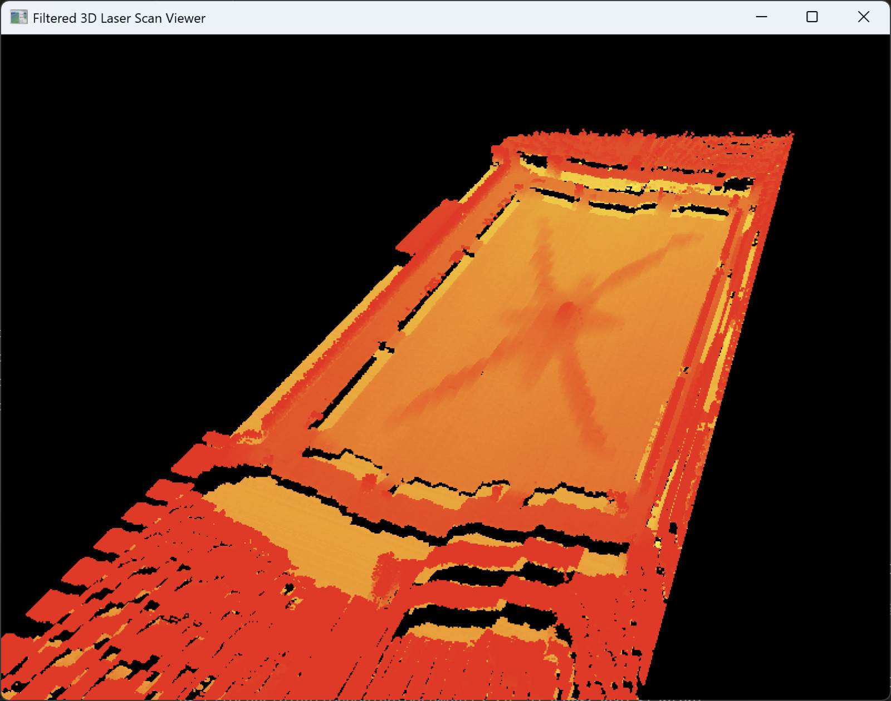
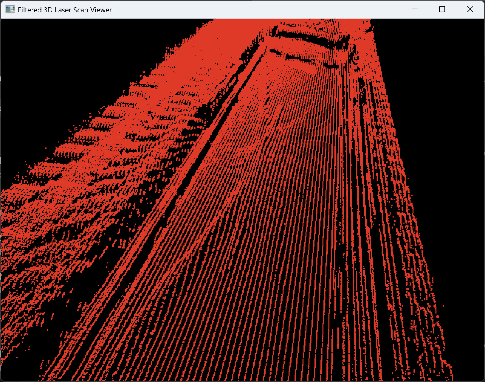
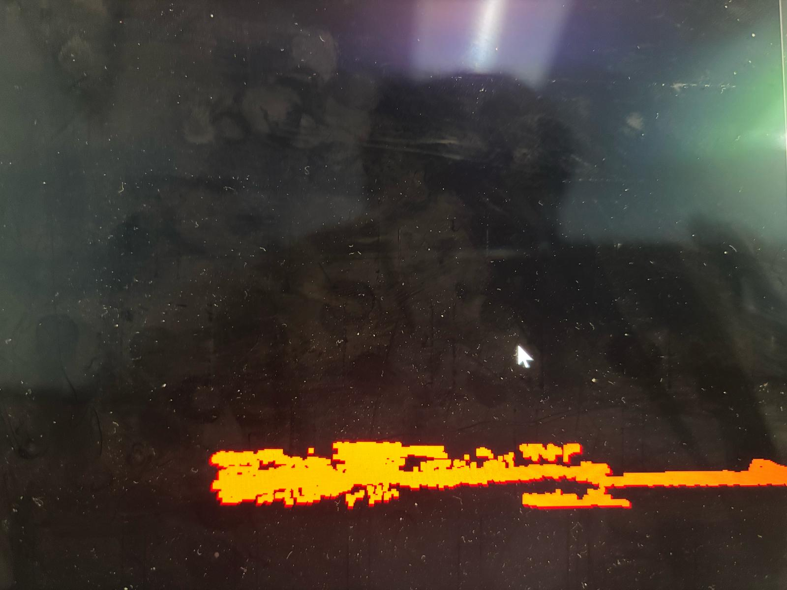

My laser scanning project involved the comprehensive development of a high-precision 3D laser scanning system aimed at automating the inspection of critical semiconductor components like lead frames. This initiative progressed from foundational algorithms for 3D reconstruction and visualization using OpenCV and OpenGL, to integrating a high-performance industrial camera via the Spinnaker SDK for seamless, real-time data acquisition. Addressing performance bottlenecks, I implemented a robust multithreading architecture to separate camera acquisition from computationally intensive processing, significantly improving throughput. The culminating phase involved integrating industrial-grade EtherCAT motion control with SOEM, enabling encoder-triggered image acquisition to ensure metrological accuracy and highly repeatable 3D point cloud data. This project showcases an end-to-end engineering solution, transforming manual inspection into an efficient, automated, and precise process vital for quality control in semiconductor manufacturing. Below is the evolution timeline of my project, enjoy!

Progression Step 6: SOEM & Encoder-Triggered Acquisitions
The final, pivotal stage of this project involved integrating industrial-grade motion control to achieve metrological accuracy in 3D scanning. I leveraged SOEM (Simple Open EtherCAT Master) to establish high-speed, deterministic communication with a Yaskawa servo drive. The core innovation in this phase was to refactor the image acquisition pipeline such that camera captures were no longer time-based or continuous, but rather precisely triggered by significant, user-defined changes in the servo encoder's output position. This direct coupling of image acquisition to physical motion guarantees that each captured 2D laser profile corresponds to an exact, repeatable 'Z' coordinate in the 3D space, leading to highly accurate and repeatable point cloud data for lead frame inspection. This integration of real-time EtherCAT control transformed the system into a robust solution for automated industrial inspection.

Progression Step 5: Multithreading for Speed
As the project evolved towards higher performance requirements, a critical bottleneck emerged in the sequential execution of image acquisition and subsequent data processing. This phase addressed that challenge by implementing a robust multithreading architecture. The system was re-engineered to employ a dedicated "camera thread" responsible solely for high-speed image acquisition from the Spinnaker camera. Simultaneously, a separate "processing thread" was introduced to consume these images from a synchronized queue, performing the computationally intensive laser line detection and 3D point cloud generation. This concurrent design pattern dramatically improved throughput and reduced latency, enabling the system to handle significantly higher data rates and prepare for rapid physical scanning motions. Additionally, the workflow was modified to support a "save" toggle using command-line flags, allowing the user to either just process and visualize the image in memory or save the points to a csv file for future review(which dramatically worsened runtime).

Progression Step 4: Spinnaker SDK Integration (Acquisition, Processing, Visualization in one script)
Building upon the foundational visualization, this phase integrated a high-performance industrial camera using the Spinnaker SDK. The goal was to establish a seamless, end-to-end pipeline within a single application. This involved configuring the camera for optimal image acquisition parameters, capturing live video streams, and feeding these frames directly into the previously developed laser line detection and 3D point cloud generation algorithms. The entire process, from raw image capture to processed 3D visualization, now operated concurrently within the same script, demonstrating a robust, live 3D scanning capability. This integration was critical for transitioning from static image analysis to dynamic, real-time data acquisition and processing. However, the process was slow compared to industry standards, which was next to be solved.

Progression Step 3: Improved Depth Visualization
Using openGL's built-in glColor3f function, I used the different y-values to change the color of the points. This enabled better depth visualization, akin to a "shadow" effect.

Progression Step 2: First optimizations
In the following steps, I gradually increased the number of images processed which despite results in a higher resolution picture, also introduces other problems such as an increase in processing time and more noise. Here, I explored optimizations like reducing the range of y-values being processed to a known range, and also a tolerance variable to filter out outliers as seen from the previous step. This resulted in a cleaner image being processed quicker, and a strongly visible central die pad "star".

Progression Step 1b: Laser Line Visualization
Hence, I obtained more images of the object and tested my code on it again. As it turns out, while the image was still crude, it was much better than the previous result and it proved that the code along with all the libraries were all working properly. This gave me the go-ahead to proceed.

Progression Step 0: Laser Line Visualization
This initial phase of the laser scanning project focused on developing the fundamental algorithms for 3D reconstruction from a single projected laser line. Utilizing OpenCV, I implemented a custom algorithm to efficiently scan each column of several 2D grayscale images, identifying the peak intensity pixel. This pixel's coordinates represent a point on the laser line's profile. By accumulating these points across the image, a 2D representation of the laser line is generated. Subsequently, this 2D data is transformed into a 3D point cloud, with the 'Z' dimension derived from the sequential processing of the line. Finally, OpenGL was employed to render this 3D point cloud, allowing for interactive manipulation and visualization of the reconstructed surface. This step established the core mathematical and programming framework for depth extraction and 3D rendering. At this point, I only had 15 or so images and wasn't sure whether my code was actually correct or I was just visualizaing random noise.